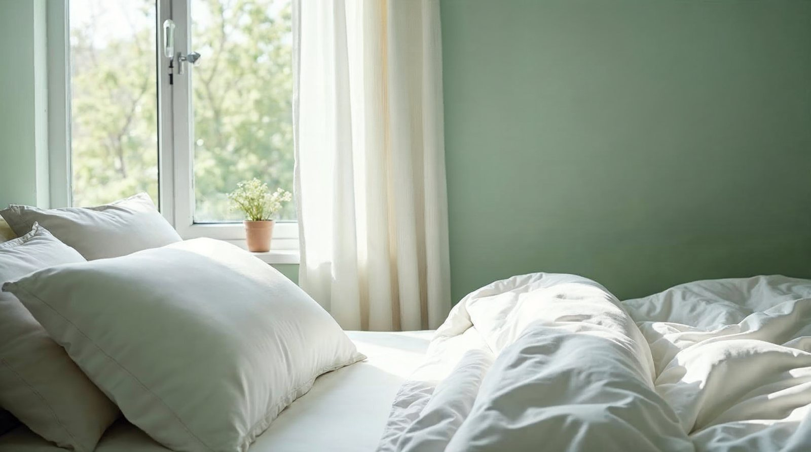
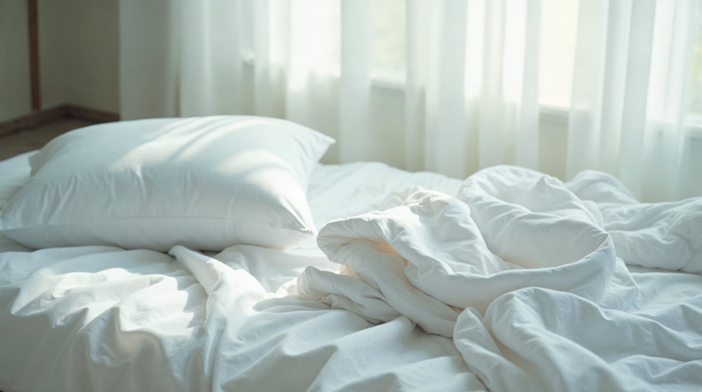
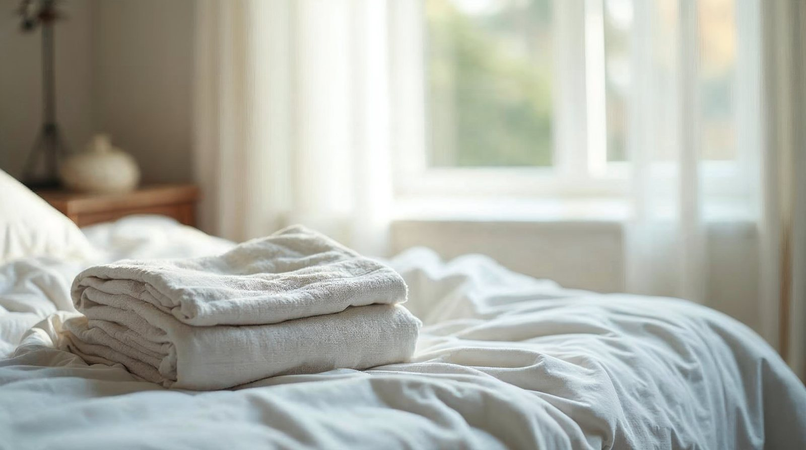
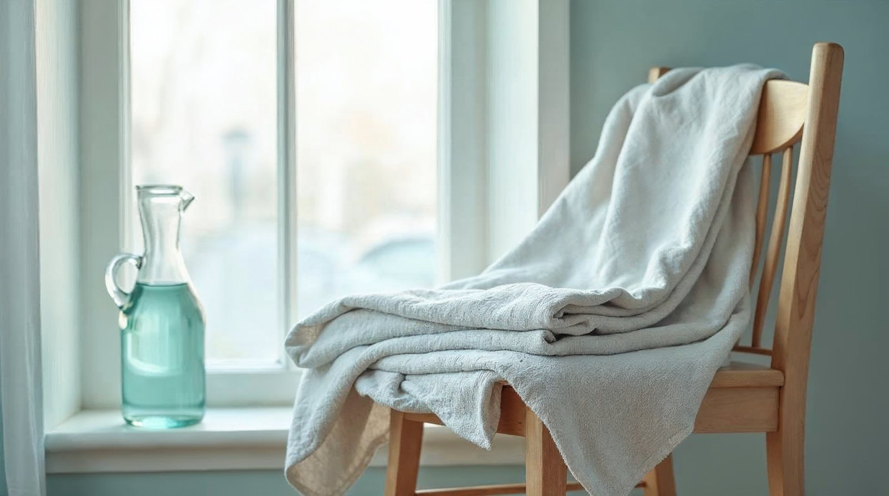

이종호 한의사 감수좋은꿈참사랑한의원 대표원장 (한의사 면허번호 19769)발행 2026-11-26 · 수정 2026-11-26
이 글의 차례
새벽에 눈을 떴는데 목덜미와 등이 축축합니다. 베개에는 땀 자국이 동그랗게 남아 있고, 잠옷은 갈아입어야 할 만큼 젖어 있습니다. 이불을 걷어 내고 다시 누우면 이번엔 몸이 서늘해 잠이 쉽게 오지 않습니다. 이런 밤이 몇 주째 이어지니 아침마다 몸이 천근만근입니다.
진료실에서는 낮에는 괜찮은데 밤에만 땀이 난다는 말씀, 자다가 땀 때문에 깨면 다시 잠들기가 힘들다는 말씀을 자주 듣습니다. 땀 자체보다 그 때문에 무너지는 잠이 더 힘들다는 분이 많습니다.
자는 동안 땀이 나서 잠옷이나 이불이 젖는 것을 흔히 밤 식은땀이라고 부릅니다. 한의학에서는 이를 도한(盜汗)이라 했는데, 잠든 사이 도둑처럼 몰래 땀이 빠져나간다는 뜻입니다. 깨어 있을 때 조금만 움직여도 나는 땀인 자한(自汗)과는 나눠서 보아 왔습니다.
밤 식은땀은 방이 덥거나 이불이 두꺼운 것처럼 단순한 까닭에서 오기도 하지만, 몸 안의 변화를 알려 주는 신호일 때도 있습니다. 이 글에서는 원인을 나눠 보는 방법과, 확인이 필요한 경우, 그리고 일상에서 해 볼 수 있는 것들을 정리해 보려 합니다.
왜 밤에 식은땀이 날까요
가장 흔한 것은 잠자리 환경입니다. 보일러를 세게 틀고 두꺼운 이불을 덮으면 잠든 뒤 체온이 내려가야 할 때 열이 빠져나가지 못해 땀이 납니다. 잠들기 직전의 술, 매운 음식, 늦은 야식, 뜨거운 목욕도 밤 땀을 늘립니다.
호르몬의 변화도 큰 원인입니다. 갱년기에는 체온을 조절하는 장치가 예민해져 얼굴이 달아오르고 땀이 확 나는 일이 밤에도 생깁니다. 갑상선 기능이 높아지면 땀과 함께 두근거림, 체중 감소, 손 떨림이 오기도 합니다. 당뇨약이나 인슐린을 쓰는 분은 자다가 혈당이 떨어지면서 식은땀이 나며 깰 수도 있습니다.
약의 영향도 살펴야 합니다. 일부 항우울제, 해열제, 호르몬 관련 약 등이 땀을 늘릴 수 있습니다. 약을 시작하거나 바꾼 뒤 밤 땀이 생겼다면 약을 스스로 끊지 마시고, 처방한 의사와 먼저 상의해 보시길 권합니다.
감염이나 다른 병의 신호일 때도 있습니다. 밤 식은땀에 열이나 이유 없는 체중 감소가 함께 있다면 결핵 같은 감염이나 림프종 같은 혈액 질환이 없는지 검사가 먼저 필요할 수 있습니다. 흔한 경우는 아니지만, 이런 신호가 하나라도 함께 있으면 검사로 먼저 확인하는 것이 순서입니다.
잠과 숨의 문제도 연결됩니다. 코를 심하게 골고 자다가 숨이 멈추는 수면무호흡이 있으면 숨을 쉬려 애쓰는 과정에서 땀이 날 수 있습니다. 불안이나 악몽 때문에 놀라 깨면서 땀에 젖는 분도 있습니다.
한의학에서는 밤 땀을 이렇게 보아 왔습니다
한의학에서는 밤에 나는 땀을 주로 음(陰)이 부족해 생긴 열, 곧 음허(陰虛)의 모습으로 설명해 왔습니다. 몸을 촉촉하게 식혀 주는 쪽이 모자라면 밤이 되어 몸이 쉬려 할 때 속의 열이 땀으로 빠져나간다고 본 것입니다.
이런 분들은 밤 땀과 함께 손바닥과 발바닥, 가슴 한가운데가 화끈거리는 느낌을 말씀하시는 경우가 많습니다. 한의학에서는 이를 오심번열(五心煩熱)이라 불렀습니다. 입이 마르고, 오후에 얼굴이 달아오르고, 잠이 얕은 모습이 함께 오기도 합니다.
반면 기운이 크게 떨어진 분은 낮에도 조금만 움직이면 땀이 나는 자한과 밤 땀이 함께 오기도 합니다. 오래 앓고 난 뒤, 출산이나 큰 수술 뒤처럼 몸이 지친 시기에 흔히 봅니다. 땀이 나는 모양에 따라 살피는 방향을 달리하는 이유입니다.

예를 들면 이런 모습입니다
실제 어느 분의 사연이 아니라, 진료실에서 자주 보는 모습을 바탕으로 그려 본 장면입니다.
예를 들어 겨울에 보일러를 세게 틀고 자는 분이라면, 새벽마다 목덜미가 젖어 깨지만 낮에는 아무렇지 않습니다. 이럴 때는 방 온도와 이불부터 바꿔 보고, 그래도 이어지는지를 일주일 지켜본 뒤 다시 이야기합니다.
갱년기 무렵의 분이라면, 밤 땀과 함께 낮에도 얼굴이 확 달아오르고 가슴이 두근거립니다. 월경의 변화와 함께 잠과 열감의 흐름을 살피고, 필요하면 산부인과 진료와 함께 가는 방법을 권합니다.
야근과 회식이 잦은 직장인이라면, 술을 마신 날 유독 땀이 많고 새벽에 깨서 다시 잠들기 어렵다고 하십니다. 저녁 술과 늦은 식사, 잠드는 시각을 함께 조정해 보는 것부터 시작합니다.
스스로 살펴보는 질문
아래 질문으로 밤 땀의 모양을 정리해 보세요. 진단을 내리는 표가 아니라, 진료실에서 상태를 말로 옮기기 위한 정리표입니다.
- 땀이 나는 곳은 목·가슴 위쪽인가, 온몸인가
- 잠옷이나 이불을 갈아야 할 만큼 젖는가
- 잠든 직후, 한밤중, 새벽 가운데 언제 주로 나는가
- 방 온도를 낮추거나 이불을 바꿨을 때 달라지는가
- 손발바닥이 화끈거리거나 입이 마르는 느낌이 함께 있는가
- 최근 열, 체중 감소, 기침, 두근거림이 있었는가
마지막 질문이 특히 중요합니다. 열이나 체중 감소가 함께 있다면 검사부터 확인하고, 없다면 잠자리 환경과 몸의 열감을 중심으로 살펴봅니다.

땀이 잠을 무너뜨리는 고리
밤 땀이 힘든 것은 땀 자체보다 그 뒤에 따라오는 일들 때문입니다. 젖은 채로 깨면 몸이 금세 식고, 옷을 갈아입느라 불을 켜고 움직이다 보면 잠이 달아납니다. 다시 누워도 '또 땀이 날까' 하는 생각에 잠이 얕아집니다.
잠이 모자라면 다음 날 피로가 쌓이고, 피곤한 몸은 저녁에 커피나 단것을 찾게 됩니다. 늦은 카페인과 야식은 다시 밤 땀과 얕은 잠을 부릅니다. 이 고리의 어느 한 곳을 먼저 풀어 주는 것이 생활 관리의 요령입니다.
땀을 많이 흘리면 몸의 물기도 함께 빠져나갑니다. 아침에 입이 바짝 마르고 소변 색이 진하다면 낮 동안 물을 조금씩 자주 마셔 채워 주세요.
땀이 잦으면 피부도 쉽게 짓무릅니다. 목덜미와 등, 가슴 밑처럼 땀이 고이는 자리가 붉어지고 가렵다면 아침에 미지근한 물로 가볍게 씻고 잘 말려 주세요. 베갯잇과 이불 커버를 자주 갈아 주는 것도 도움이 됩니다.
비슷해 보이지만 다른 땀들
밤 식은땀과 헷갈리기 쉬운 땀이 몇 가지 있습니다. 먼저 잠들기 직전이나 잠든 직후 잠깐 나는 땀입니다. 몸이 잠에 들면서 체온을 내리는 과정에서 생기는 자연스러운 땀으로, 잠옷이 젖을 정도가 아니라면 크게 걱정하지 않으셔도 됩니다.
손바닥과 발바닥, 겨드랑이에 낮에도 땀이 많은 다한증은 보통 잠든 동안에는 줄어듭니다. 낮에는 땀이 많은데 밤에는 괜찮다면 다한증 쪽에 더 가깝고, 밤에 유난히 젖는다면 밤 식은땀 쪽으로 살핍니다.
악몽이나 불안 때문에 깜짝 놀라 깨면서 나는 땀도 있습니다. 이때는 가슴이 두근거리고 숨이 가쁜 느낌이 함께 오고, 꿈의 내용이 생생하게 남아 있는 경우가 많습니다. 땀보다 놀람과 불안이 앞에 있는 모습이라 마음과 잠을 함께 봅니다.
갱년기의 열감은 얼굴과 목, 가슴 위쪽이 먼저 확 달아오르고 그 뒤에 땀이 쏟아지는 순서를 보입니다. 낮에도 같은 일이 반복된다면 갱년기의 흐름 안에서 함께 살피는 것이 자연스럽습니다.
이렇게 땀의 모양을 나눠 보면 진료실에서 이야기의 방향이 훨씬 또렷해집니다. 어느 쪽인지 헷갈려도 괜찮습니다. 생각나는 대로 말씀해 주시면 함께 나눠 보겠습니다.

계절과 나이에 따라 달라지는 밤 땀
계절도 밤 땀의 모양을 바꿉니다. 여름에는 방이 덥고 습해 누구나 땀이 늘지만, 겨울인데도 땀에 젖어 깬다면 난방과 이불부터 살펴봅니다. 우리나라 겨울 집은 바닥이 뜨겁고 공기는 건조해, 등은 땀이 차고 얼굴과 목은 마르는 일이 흔합니다.
나이에 따라서도 흐름이 다릅니다. 젊은 분은 늦은 야식과 술, 불규칙한 잠이 원인인 경우가 많고, 중년에는 갱년기와 갑상선, 혈당의 변화가 겹치기 쉽습니다. 어르신은 드시는 약이 많고 체온 조절이 둔해져 이불 하나 차이에도 땀이 달라집니다.
그래서 저는 땀이 언제부터, 어떤 계절에, 무엇이 바뀐 뒤에 시작되었는지를 꼭 여쭙니다. 그 질문 하나로 원인의 실마리가 보이는 경우가 적지 않습니다.
먼저 이렇게 여쭙니다
처음 오신 분이든 다시 오신 분이든 저는 먼저 양손을 올려 달라고 말씀드립니다. 맥부터 짚으며 밤 땀이 언제부터 시작되었는지, 그 무렵 생활에 어떤 변화가 있었는지를 여쭙습니다. 새로 시작한 약, 이사나 계절 변화, 술과 야식, 큰 스트레스 같은 것들입니다.
그다음 땀의 모양과 함께 열, 체중 변화, 기침, 두근거림, 월경의 변화, 코골이를 차례로 확인합니다. 최근 건강검진 결과지나 혈액 검사 결과가 있다면 가져와 주세요.
혀와 손바닥·발바닥의 온도, 얼굴빛도 함께 보며 몸의 열과 기운이 어떤 모습인지 가늠합니다.

일상에서 먼저 해 볼 수 있는 것
밤 땀은 잠자리 환경을 조금만 바꿔도 달라지는 경우가 많습니다. 일주일 정도 아래 약속을 지켜 보고 변화를 적어 주세요.
- 침실은 조금 서늘하게 두고, 이불은 얇은 것을 여러 겹으로 덮어 조절합니다
- 잠옷은 땀을 잘 흡수하는 면 소재로, 머리맡에 갈아입을 옷과 수건을 둡니다
- 잠들기 세 시간 전부터는 술, 매운 음식, 야식을 피합니다
- 커피는 오전에 한 잔 정도로 줄입니다
- 잠들기 직전 뜨거운 목욕 대신 한두 시간 전 미지근한 샤워를 합니다
- 낮에 물을 조금씩 자주 마시고, 자기 직전에는 많이 마시지 않습니다
땀에 젖어 깼을 때는 불을 환하게 켜지 말고 작은 조명 아래 수건으로 닦고 옷만 갈아입은 뒤 바로 누우세요. 깨어 있는 시간을 짧게 하는 것이 다시 잠드는 데 도움이 됩니다.
손발바닥이 화끈거리는 분은 이불 밖으로 발을 내놓거나 시원한 베개를 쓰는 것만으로 한결 편해지기도 합니다. 반대로 발이 차고 땀이 나는 분이라면 얇은 양말이 더 나을 수 있어, 몸의 모양에 맞춰 조절합니다.
저녁 식사는 잠들기 서너 시간 전에 가볍게 마치는 편이 좋습니다. 기름지고 매운 음식이나 뜨거운 국물을 늦게 먹으면 몸에 열이 남아 밤 땀이 늘기 쉽습니다. 낮에 해를 보며 걷는 시간을 두면 밤에 체온이 자연스럽게 내려가 잠이 깊어지는 데에도 도움이 됩니다.
한의원에서 함께 살필 수 있는 경우
열, 체중 감소, 기침처럼 검사가 필요한 신호가 있다면 내과 진료가 먼저입니다. 그 위에서 한의원이 함께 살필 수 있는 경우는 이런 때입니다.
- 내과 검사에서 큰 이상은 없다는데 밤 땀과 얕은 잠이 이어지는 경우
- 밤 땀과 함께 손발바닥 열감, 입마름, 오후의 얼굴 달아오름이 있는 경우
- 갱년기 무렵 열감과 밤 땀으로 잠이 깨는 경우(산부인과 진료와 함께)
- 오래 앓거나 출산·수술 뒤 기운이 떨어지며 땀이 많아진 경우
진찰을 마친 뒤에는 침, 한약 상담, 생활 약속처럼 함께 할 수 있는 것을 정합니다. 한약은 드시는 약을 확인한 뒤 상의합니다. 어떤 방법이든 결과를 미리 약속드리기보다, 다음 진료에서 땀과 잠이 어땠는지 함께 보며 조정합니다.
이렇게 기록해 오시면 상담이 쉬워집니다
밤 땀은 날마다 조금씩 달라서 기억만으로는 흐름을 잡기 어렵습니다. 일주일만 짧게 적어 와 주세요.
- 땀에 젖어 깬 시각과 젖은 정도(조금 축축, 옷을 갈아입음)
- 그날 방 온도와 이불, 잠옷
- 저녁 술·야식·커피 여부와 시각
- 잠든 시각, 깬 횟수, 다시 잠든 시각
- 손발바닥 열감, 입마름, 열, 두근거림이 있었는지
환경을 바꾼 날과 바꾸지 않은 날을 나란히 놓고 보면 무엇이 땀을 부르는지 보이기 시작합니다. 빈칸이 있어도 괜찮습니다. 다음에 오시면 그 기록부터 함께 보겠습니다.
땀에 젖어 깨는 밤이 이어지면 몸보다 마음이 먼저 지치기 쉽습니다. 원인을 하나씩 나눠 보면 손댈 수 있는 곳이 생각보다 많습니다. 조급해하지 마시고 한 가지씩 바꿔 가 보시길 바랍니다.
이런 증상은 먼저 확인이 필요합니다
- 밤 땀과 함께 열이 이어지거나, 이유 없이 체중이 줄거나, 기침이 오래가는 경우
- 식은땀과 함께 가슴 통증이나 숨참이 있거나, 의식이 흐려지는 경우
이런 신호가 있으면 한의원보다 가까운 병원이나 응급실을 먼저 찾으세요.
함께 읽으면 좋은 글
- 갱년기에 밤마다 땀에 젖어 깨는 날이 많을 때는 어떻게 하나요?
- 얼굴이 달아오르고 땀이 갑자기 날 때는 어떤 점을 살펴보나요?
- 손바닥·발바닥·겨드랑이에 땀이 너무 많은 다한증은 어떻게 살피나요?
- 새벽에 자꾸 잠이 깨는 이유는 무엇이고, 어떤 점을 살펴보나요?
여쭙는 것
- 처음 오신 분이든 다시 오신 분이든 저는 먼저 양손을 올려 달라고 말씀드립니다.
- 맥부터 짚으며 밤 땀이 언제부터 시작되었는지, 그 무렵 생활에 어떤 변화가 있었는지…
- 새로 시작한 약, 이사나 계절 변화, 술과 야식, 큰 스트레스 같은 것들입니다.
생활에서 해 볼 것
- 침실은 조금 서늘하게 두고, 이불은 얇은 것을 여러 겹으로 덮어 조절합니다
- 잠옷은 땀을 잘 흡수하는 면 소재로, 머리맡에 갈아입을 옷과 수건을 둡니다
- 잠들기 세 시간 전부터는 술, 매운 음식, 야식을 피합니다
한의원에서 함께 살필 것
- 내과 검사에서 큰 이상은 없다는데 밤 땀과 얕은 잠이 이어지는 경우
- 밤 땀과 함께 손발바닥 열감, 입마름, 오후의 얼굴 달아오름이 있는 경우
- 갱년기 무렵 열감과 밤 땀으로 잠이 깨는 경우(산부인과 진료와 함께)
먼저 확인이 필요한 신호
- 밤 땀과 함께 열이 이어지거나, 이유 없이 체중이 줄거나, 기침이 오래가는 경우
- 식은땀과 함께 가슴 통증이나 숨참이 있거나, 의식이 흐려지는 경우
한눈에 보는 표
| 구분 | 핵심 |
|---|---|
| 생활에서 해 볼 것 | 침실은 조금 서늘하게 두고, 이불은 얇은 것을 여러 겹으로 덮어 조절합니다 잠옷은 땀을 잘 흡수하는 면 소재로, 머리맡에 갈아입을 옷과 수건을 둡니다 |
| 한의원에서 함께 살필 것 | 내과 검사에서 큰 이상은 없다는데 밤 땀과 얕은 잠이 이어지는 경우 밤 땀과 함께 손발바닥 열감, 입마름, 오후의 얼굴 달아오름이 있는 경우 |
| 먼저 확인이 필요한 신호 | 밤 땀과 함께 열이 이어지거나, 이유 없이 체중이 줄거나, 기침이 오래가는 경우 식은땀과 함께 가슴 통증이나 숨참이 있거나, 의식이 흐려지는 경우 |
자주 묻는 질문
밤에 땀이 나는 건 몸이 허해서 그런가요?
그럴 때도 있지만 방 온도, 이불, 술, 약, 갑상선, 감염처럼 원인이 여러 가지입니다. 먼저 환경을 바꿔 보고, 열이나 체중 감소가 함께 있다면 검사부터 확인합니다. 그 뒤 진찰로 몸의 열과 기운이 어떤지 함께 봅니다.
도한과 자한은 무엇이 다른가요?
도한은 잠든 사이에 나는 땀, 자한은 깨어 있을 때 조금만 움직여도 나는 땀을 말합니다. 한의학에서는 두 가지를 나눠 보고 살피는 방향을 달리해 왔습니다. 둘이 함께 있는 분도 있습니다.
손발바닥이 화끈거리는 것도 관련이 있나요?
밤 땀과 손발바닥 열감이 함께 오는 분이 많습니다. 한의학에서는 이를 오심번열이라 부르며 몸의 열과 진액의 균형을 함께 살핍니다. 다만 손발 화끈거림은 신경이나 혈당 문제로도 생길 수 있어 필요하면 검사도 함께 권합니다.
땀을 많이 흘리니 물을 더 마셔야 할까요?
낮 동안 조금씩 자주 마셔 채워 주시는 것이 좋습니다. 다만 자기 직전에 많이 마시면 소변 때문에 깨기 쉬우니 저녁 이후에는 양을 줄이세요.
아이가 자면서 머리에 땀을 많이 흘려요.
아이는 어른보다 땀이 많고, 잠든 직후 머리에 땀이 나는 일이 흔합니다. 열, 기침, 체중 변화가 없고 잘 놀고 잘 먹는다면 방 온도와 이불부터 조절해 보세요. 걱정되는 신호가 함께 있다면 소아청소년과 진료를 먼저 받아 보시길 권합니다.
좋은꿈참사랑한의원은 재진 때 지난번 이야기부터 이어서 여쭙니다. 진료시간과 예약은 오시는 길에서 확인하세요.
어디서 상담받을 수 있나요?
좋은꿈참사랑한의원은 서울 동작구 만양로2길 2 신성빌딩 3층·5층(서울 동작구 상도동, 7호선 상도역 3번 출구 근처)에 있습니다. 한의사 3명(이종호 대표원장, 조영기 수석진료원장, 정원영 진료원장)이 진료합니다. 진료시간은 평일 09:30~20:00(점심 13:00~14:00), 토·일·공휴일 09:30~15:00이며, 방문 전 전화로 확인을 권합니다. 예약은 네이버 예약, 카카오톡 상담, 전화 02-815-7510로 받습니다.
이 글은 일반적인 건강 정보이며 개인의 진단이나 치료를 대신하지 않습니다. 증상이 있거나 복용 중인 약이 있다면 진료를 통해 확인하세요. 치료 효과는 개인마다 다를 수 있습니다.
작성 기준: 일반적으로 알려져 있는 건강 정보를 참고해 정리했습니다(대표원장 감수). 증상 기록은 1~2주 동안 하루 1회, 비슷한 시간에 적어 오시면 지난 상태와 비교하기 쉽습니다.